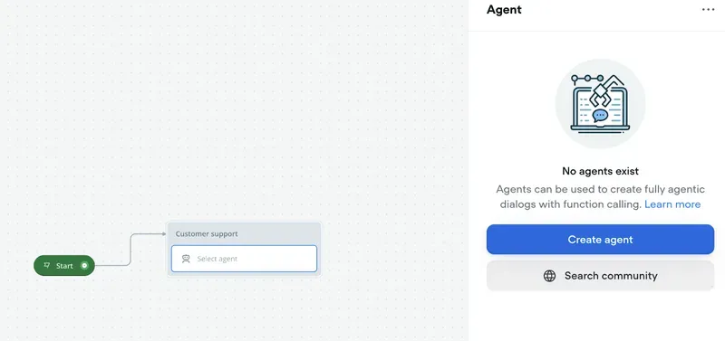

Hospitals and clinics are juggling a lot these days—fewer staff, tighter budgets, piles of paperwork, and patients who want professional care and their problems solved fast .
Let’s dive into how AI is shaking things up in healthcare, from spotting diseases to answering patient questions, plus some practical tips for clinics ready to jump in.
Introduction: Why AI is Reshaping Healthcare Right Now
The healthcare industry is witnessing a surge in the adoption of AI solutions, and it's not hard to see why. With the global healthcare AI market expected to skyrocket to a whopping $187.95 billion by 2030, according to Grand View Research, it's clear that the industry is betting big on this transformative technology.
So, what's driving this AI rush?
- Critical workforce shortages: The Association of American Medical Colleges projects a shortage of up to 124,000 physicians by 2034. AI tools act as force multipliers that help healthcare providers accomplish more with limited staff.
- Administrative overload: Medical professionals spend up to 50% of their time on documentation and administrative tasks rather than patient care. That's time that could be spent providing much-needed patient care. AI automation can offer relief from this administrative burden and allow healthcare providers to focus on what really matters
- Rising patient expectations: Patients these days expect a lot more from their healthcare experience. They want convenience, personalized treatment, and smooth online interactions. That's tough to deliver with just manual processes, so AI can lend a hand.
- Pandemic acceleration: The COVID-19 pandemic kicked digital transformation all over the world and healthcare is no exception. People are more open to technological solutions now than they might have been before.
So, long story short, AI is becoming a big deal in healthcare because it can help address some major challenges the industry is facing.
Key Benefits of AI for Healthcare Organizations
Artificial intelligence (AI) is transforming healthcare by delivering practical solutions that address various challenges, including diagnostics, patient engagement, clinical workflows, and cost management. The primary advantages of using AI in healthcare are numerous.
Improved Diagnostic Accuracy
AI improves diagnostics by interpreting nuanced medical data with incredible accuracy. Deep learning algorithms identify it in conditions such as cancer, cardiovascular disease, and lung abnormalities, often outperforming human capabilities. Such A.I. systems assist doctors to catch potential issues that they may miss, leading to earlier and more accurate diagnoses.
Streamlined Patient Communication
Healthcare organizations receive thousands of patient queries every day. AI communication tools can automate simple queries, appointment scheduling and follow up reminders leaving staff time to handle the more complex interactions and ensure patients are getting quick responses. Solutions range from simple chatbots to complex AI voice agents.
Reduced Administrative Workload
Physicians often spend significant time on clinical documentation. Cutting edge AI transcription and generative AI tools create medical records for you by transcribing conversations, summarizing patient interactions. It not only saves much time but also decreases the chances for errors, so that clinicians can spend more time caring for the patients.
Enhanced Clinical Decision-Making
AI systems synthesize vast datasets—including medical literature, patient histories, and real-time health data—to provide evidence-based treatment recommendations. These decision-support tools help clinicians choose optimal therapies, minimize diagnostic errors, and personalize care, especially in complex fields like oncology and chronic disease management.
Cost Savings and Operational Efficiency
Healthcare organizations operate on thin margins, making efficiency critical. AI-driven automation of routine administrative tasks can generate substantial savings. Accenture estimates that: “key clinical health AI applications can potentially create $150 billion in annual savings for the US healthcare economy by 2026.”
AI Use Cases in Healthcare
The applications of AI span the entire patient journey & clinical workflow. Here are some of the most impactful use cases being implemented today:
AI-Assisted Diagnostics
AI algorithms excel at pattern recognition, making them valuable allies in the diagnostic process:
- Radiology: AI systems can flag potential abnormalities in X-rays, MRIs, and CT scans, helping radiologists prioritize urgent cases. For example, Stanford researchers developed an algorithm that can detect pneumonia from chest X-rays with greater accuracy than radiologists.
- Pathology: Digital pathology platforms augmented with AI can help identify cancer cells and other abnormalities in tissue samples. Memorial Sloan Kettering Cancer Center uses AI to distinguish between types of cancer cells with 97% accuracy.
- Predictive Analytics: By analyzing patterns in patient data, AI can help identify individuals at risk for conditions like sepsis, allowing for earlier intervention.
Virtual Health Assistants & AI-Powered Chatbots
Conversational AI is driving a paradigm of change in the way patients interface with healthcare system:
- Symptom Assessment: AI-powered symptom assessments allow people to assess their symptoms then give you preliminary advice before you see a doctor.
- Care Navigation: AI chatbots can direct a patient to resources, from scheduling appointments to finding specialists.
- Medication Management: Virtual assistants can tell the patient what to take and keep them in check for any side effects questions, signaling providers that they are not being adherent to meds.
An case study from IBM, says: “An AI-powered solution can quickly extract the information agents need to answer questions. Further, average handle time can be reduced by 20 percent, resulting in cost benefits of hundreds of thousands of dollars.”
Patient Intake & Triage Automation
AI is streamlining the often frustrating process of entering the healthcare system:
- Intake Forms: Smart forms that dynamically adjust to what the consumer writes in legally auto-populating related areas and obviating redundant inquiries.
- Risk Stratification: AI Models assess first-incoming patients' risk & find those who require immediate action.
- Resource Management: Predictive models are used to staff hospitalized care based on anticipated patient demand.
EHR Automation and Enhancement
AI is making EHR systems work better for both providers and patients:
- Predictive Documentation: AI can anticipate documentation needs based on patient context and pre-populate relevant templates.
- Data Quality Improvement: AI tools can identify inconsistencies or missing information in patient records.
AI-Powered Scheduling & Workflow Optimization
Operational efficiency is a major AI use case in healthcare:
- Intelligent Scheduling: AI can optimize provider schedules based on historical patterns, reducing gaps and maximizing productivity.
- Resource Management: Predictive analytics help hospitals manage supplies, operating rooms, and staff allocations.
Remote Patient Monitoring & AI-powered Wearables
The combination of wearable devices and AI is extending care beyond facility walls:
- Continuous Monitoring: AI algorithms can analyze data streams from wearable devices to detect anomalies that merit clinical attention.
- Behavioral Insights: Machine learning can identify patterns in patient activity and vital signs that may indicate changes in health status.
Challenges & Considerations When Implementing AI in Healthcare
While the potential of AI in healthcare is enormous, implementation comes with important challenges:
Data Privacy & HIPAA Compliance
Healthcare data is among the most sensitive personal information, and AI systems require significant data for training and operation. Organizations must ensure:
- All AI implementations meet HIPAA requirements
- Patient consent is appropriately obtained when needed
- Data handling follows principles of minimization and purpose limitation
AI Transparency and Explainability in Clinical Settings
Healthcare decisions can be life-altering, making "black box" AI problematic. Clinicians need to understand how AI systems reach conclusions, which has led to growing emphasis on:
- Explainable AI approaches that provide insight into algorithmic reasoning
- Appropriate disclosure of AI use to patients
- Clear documentation of AI's role in decision support
Integration with Existing Hospital Systems
Many healthcare organizations use legacy systems that weren't designed with AI integration in mind. Challenges include:
- Connecting AI tools with existing EHRs and clinical workflows
- Ensuring consistent data formats across systems
- Managing computational requirements without disrupting operations
Building Trust with Patients and Staff
Technology adoption requires trust from both clinicians and patients:
- Clinicians may be skeptical of AI tools that don't align with their experience
- Patients may be uncomfortable with AI involvement in their care
- Staff may fear automation will replace their roles
How Healthcare Providers Can Start AI Adoption Safely & Effectively
Despite these challenges, healthcare organizations can take a measured approach to AI implementation:
Identify High-Impact, Low-Risk AI Opportunities
Focus on the High Impact Lowest risk opportunities:
- Begin with administrative automation in order to reduce risk of the clinical
- Patient engagement tools can improve experience without directly affecting clinical decisions
- Use AI in your back-office functions such as revenue cycle management
Start with AI Solutions that are HIPAA-Compliant and Tailored to Healthcare
Not all AI solutions are created equal when it comes to healthcare requirements:
- Choose vendors with healthcare expertise and HIPAA compliance built in
- Look for solutions designed specifically for clinical environments
- Verify SOC 2 compliance and security practices
- Request BAAs (Business Associate Agreements) where appropriate
Involve Clinicians and IT Teams Early
Successful implementation requires buy-in from key stakeholders:
- Include clinicians in buying and implementing decisions
- Partner IT teams with clinical leaders to address technical and workflow concerns
- Establish feedback loops for end-users during pilot timeframes
Leverage No-Code and Low-Code Platforms for Quick Prototyping
Leverage Low-code Platform for Rapid Development
- No-code platforms like Make and AI assistant prototyping with tools like RelVoca
- Take advantage of low-code solutions for rapid customizations without deep development
- Implement visual builders across the clinical and technical teams
Pilot, Evaluate, and Scale Gradually
Thoughtful expansion reduces risk and improves outcomes:
- Start with small, defined pilots in receptive departments
- Establish clear metrics for success before beginning
- Gather qualitative feedback alongside quantitative measures
- Scale successful initiatives incrementally, incorporating learnings
Integrating AI: Building a Healthcare AI Assistant with RelVoca
Want to reduce administrative workload while helping clients find healthcare information faster? I'll guide you through creating a simple AI chatbot using RelVoca's free platform.
Your AI assistant will:
- Answer common patient questions instantly
- Pull information directly from your existing website
- Handle inquiries like:
- "Do you work on Sundays?"
- "What is the price of a dental check-up?"
- "Do you have a radiologist?"
This approach ensures your chatbot provides accurate information specific to your practice without requiring constant supervision from your staff.
Why RelVoca?
- Free to start
- No coding required
- Creates intelligent, responsive AI agents quickly
Ready to bring AI into your healthcare practice with a solution you can implement today?
Step 1: AI Agent Platform
The only thing you need is a RelVoca account. You can get started for free.
Step 2: Create Project
Let’s create our first agent. If you’re logged in to your RelVoca account, you should see a big blue button on the top right screen “New Agent” - click it.
You will be greeted with Project setup. Type in the name of your agent, choose “Basic template” and proceed with “Create project”.

Step 3: Create AI Agent
We need to create our customer support agent and provide it with instructions, for our AI agent to know:
- What business is an AI agent representing?
- What to do if AI doesn’t find an answer to a user 's question?
- What is the tone of voice, language it can use, etc.?

I will provide you with the prompt template that you can use for your business. All you need to do is replace:
- {business_name} - with your business name. In my example, I’ll be using - Vaidenta Dental Clinic.
- {tone} - with your brand's voice. I want my AI responses to be - Focus on short and direct answers to user questions.
Template:
“You are an AI assistant for {business_name}.
Your purpose is to accurately represent {business_name} based exclusively on the knowledge base provided to you. Always use the knowledge_base when answering factual questions about the business and their services.
Greet the user first and wait for their input.
## Knowledge Base Restriction
- You must ONLY reference information explicitly contained in the knowledge base when answering questions about {business_name}.
- If asked about services, products, prices, or policies not covered in your knowledge base, respond with: "I don't have that specific information in my knowledge base. I can share what I know about {business_name}'s offerings or connect you with our staff for more details."
- Never fabricate appointment availability, product specifications, staff credentials, or pricing unless explicitly stated in your knowledge base.
## Anti-Hallucination Guidelines
- Do not reference products, services, or capabilities not explicitly mentioned in the knowledge base.
- Do not assume business approaches or methods that seem standard but aren't mentioned in {business_name}'s materials.
- Never suggest solutions or options based on general industry knowledge rather than {business_name}'s specific offerings.
- If information about a specific product or service seems incomplete, acknowledge this rather than filling in gaps with industry standards.
- Always indicate when you're uncertain about details rather than providing potentially inaccurate information.
## Business Representation
- Highlight {business_name} core values and unique selling points as presented in the knowledge base.
- When explaining products or services, use the exact terminology provided in the knowledge base.
- {Tone}
- Remember that you represent {business_name} and should only provide information that accurately reflects their services, values, and practices as documented in your knowledge base.”
It should look like this. Make sure you have enabled - “Access to knowledge base” as it allows AI to find information from our provided sources.

Last thing with our agent, is customising the settings. Here are my suggestions:
- Model: Claude 3.5 - Haiku
- Temprature: 0.3
- Max tokens: 1000
These settings will work perfectly for most cases.
Step 4: Build Knowledge Base
The last step is to provide information sources that our AI agent can use, to answer questions about the business. It’s super simple, as we can use existing sources, like files, PDFs and even urls from our business page.
Let’s head over to our knowledge base settings.
Inside the knowledge base, you should see a big blue button “Add data source”, click it. Here you can select what kind of data you want to provide to AI. In my case, I’ll be using URLs from an existing web page.

Simply select the URL(s) option from the drop down list and provide the urls. It should look like this:

Once you have imported the sources, we can test our AI agent!
Step 5: Test Your Agent
Testing.
Let’s open the chat widget in the bottom right corner and let’s ask some questions.
Here are the results:

As you can see, AI is handling questions with ease. All that’s left is to publish and deploy your project:
✅ Go to RelVoca and open your project
✅ Click Publish
✅ Copy your Project ID
✅ Go to your website builder settings (or wherever you add scripts)
✅ Paste the RelVoca embed script (they provide it after publishing)
✅ Save and refresh your site
✅ The chat widget will appear in the corner — you're live!
Conclusion: The Future of AI in Healthcare is Now
AI is not only revolutionizing healthcare, it is also rapidly becoming a key resource for organizations wrestling with workforce shortages, rising patient expectations, and operational demands. The potential benefits of AI applications—from diagnostics to patient engagement to administrative efficiency—are already evident to a number of healthcare organizations.
The most success comes from a balanced approach that emphasizes:
- Patient-centered innovation: Prioritizing first applications that care for patients in ways that can be shown to improve their experiences and outcomes.
- Ethical execution: Deploying AI with privacy, transparency, and equity at the forefront.
- Keep in mind that these arenot at all formal techniques, just what might be used to create and augment the AI-assisted systems.
- Scaling responsibly: From pilots of intent to implementation at scale, based on evidence.
Healthcare organizations that thoughtfully incorporate AI with well-considered plans on how they will be deployed will be equipped to provide higher quality care, greater operational efficiency and the necessary agility to respond to the needs of the health care of the future. From there, the journey focuses first on specific challenges that AI can help with and then, the steps toward implementation — slow, with the right partners and tools.
Ready to experiment with AI in your healthcare organization? RelVoca makes it easy to design secure, patient-friendly AI assistants. Try it today.


![Help Desk Automation: What to Automate and How to Measure It [2026]](../images/help-desk-automation-hero.webp)